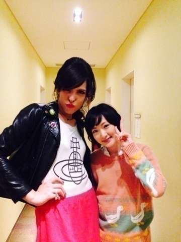

| 2013/11 13 Wed | お鍋が食べたい。春 菊いれてねヽ(・∀ ・)ﾉ |
こんばんは〜ヽ(・∀・)ﾉ
生駒ちゃんです〜ヽ(・∀・)ﾉ
おばんです〜ヽ(・∀・)ﾉ
今日朝お布団からガチで出れなかった！
お布団はいつまでも生駒ちゃんを優しくこれでもかってぐらい優しく包み込んでくれて(〃艸〃)
でもお仕事だし無理やり脱出しました！
う〜でもいつまでも寝ていたい〜

昨日今夜くらべてみましたが放送されましたねっ！
観た方どれくらいいるのかな〜
共演したIVANさんとパシャリしました！

めちゃくちゃかわいいお方で

いろいろお話しもしました！
ありがとうございました！
あと生駒ちゃんFree!のまこちゃんが好きだとカミングアウトしてしまいました〜(〃ω〃)
生駒ちゃんいろいろ好きなんですっ！
基本ドSなキャラが好きなのですが
ウザヤさん（折原臨也）しかり沖田くんしかりでもまこちゃんの全てを包み込む優しさにノックアウトされました。
まこちゃんがはるって呼ぶじゃないですか。
凄く好きなんですそれがにやにや
生駒ちゃん結構コアなんです。
いつか語りたいと思った方がもしいらっしゃったら語りましょう。
語りに語りましょう。
ヽ(・∀・)ﾉヽ(・∀・)ﾉヽ(・∀・)ﾉ

まぁ生駒ちゃんは元気って事ですねっ！
話は変わりますが、
せっちゃんとゆっきーなの卒業が発表されました。
やっぱり乃木坂46の基礎を1から一緒に作り上げてきた仲間。
私達以外は作れない乃木坂の本当の最初を一緒に頑張ってきた仲間が卒業しちゃうのは寂しい。
発表を見て寂しいって気持ちが全身を走りました。
でも自分でやりたいって、決めた道だから。
私はずっと応援してる！
お互い頑張ろうねっ！
でもやっぱさみしいな(´；Д；｀)
よしっ！
生駒ちゃんも夢に向かって頑張るぞ！
うおーーーーーーー！
へばなっ！☆
コメント(501)
2013/11/13 21:00